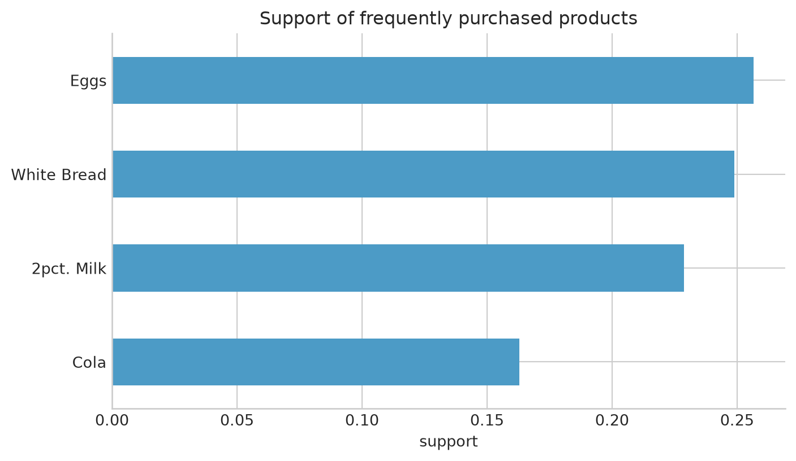

Code
Instances: 1,000
Attributes: 15Association Rules

We will:
The warm-up uses CensusTraining.arff, a 1,000-row sample of US census records. Its 15 attributes describe age, employment, education, household role, demographics, capital gains/losses, working hours, country, and whether total income exceeds $50K.
| age | workclass | fnlwgt | education | education-num | marital-status | occupation | relationship | race | sex | capital-gain | capital-loss | hours-per-week | native-country | class | |
|---|---|---|---|---|---|---|---|---|---|---|---|---|---|---|---|
| 0 | 39.0 | State-gov | 77516.0 | Bachelors | 13.0 | Never-married | Adm-clerical | Not-in-family | White | Male | 2174.0 | 0.0 | 40.0 | United-States | <=50K |
| 1 | 50.0 | Self-emp-not-inc | 83311.0 | Bachelors | 13.0 | Married-civ-spouse | Exec-managerial | Husband | White | Male | 0.0 | 0.0 | 13.0 | United-States | <=50K |
| 2 | 38.0 | Private | 215646.0 | HS-grad | 9.0 | Divorced | Handlers-cleaners | Not-in-family | White | Male | 0.0 | 0.0 | 40.0 | United-States | <=50K |
| 3 | 53.0 | Private | 234721.0 | 11th | 7.0 | Married-civ-spouse | Handlers-cleaners | Husband | Black | Male | 0.0 | 0.0 | 40.0 | United-States | <=50K |
| 4 | 28.0 | Private | 338409.0 | Bachelors | 13.0 | Married-civ-spouse | Prof-specialty | Wife | Black | Female | 0.0 | 0.0 | 40.0 | Cuba | <=50K |
Association-rule search requires discrete attributes. As in the slides, we:
fnlwgt (the final sampling weight);attribute=value pair.Missing values are not turned into items.
One-hot transaction matrix: 1000 x 115| age | workclass | education | education-num | marital-status | occupation | relationship | race | sex | capital-gain | capital-loss | hours-per-week | native-country | class | |
|---|---|---|---|---|---|---|---|---|---|---|---|---|---|---|
| 0 | (36.5, 41.5] | State-gov | Bachelors | (11.5, 13.5] | Never-married | Adm-clerical | Not-in-family | White | Male | (297.0, inf] | (-inf, 326.5] | (35.5, 40.5] | United-States | <=50K |
| 1 | (49.5, 57.5] | Self-emp-not-inc | Bachelors | (11.5, 13.5] | Married-civ-spouse | Exec-managerial | Husband | White | Male | (-inf, 297.0] | (-inf, 326.5] | (-inf, 24.5] | United-States | <=50K |
| 2 | (36.5, 41.5] | Private | HS-grad | (7.5, 9.5] | Divorced | Handlers-cleaners | Not-in-family | White | Male | (-inf, 297.0] | (-inf, 326.5] | (35.5, 40.5] | United-States | <=50K |
| 3 | (49.5, 57.5] | Private | 11th | (-inf, 7.5] | Married-civ-spouse | Handlers-cleaners | Husband | Black | Male | (-inf, 297.0] | (-inf, 326.5] | (35.5, 40.5] | United-States | <=50K |
| 4 | (25.5, 29.5] | Private | Bachelors | (11.5, 13.5] | Married-civ-spouse | Prof-specialty | Wife | Black | Female | (-inf, 297.0] | (-inf, 326.5] | (35.5, 40.5] | Cuba | <=50K |
In association analysis there is no privileged class unless we deliberately choose one.
education and education-num encode nearly the same concept.NMI(education, education-num) = 1.000| education-num | 1.0 | 2.0 | 3.0 | 4.0 | 5.0 | 6.0 | 7.0 | 8.0 | 9.0 | 10.0 | 11.0 | 12.0 | 13.0 | 14.0 | 15.0 | 16.0 |
|---|---|---|---|---|---|---|---|---|---|---|---|---|---|---|---|---|
| education | ||||||||||||||||
| 10th | 0 | 0 | 0 | 0 | 0 | 21 | 0 | 0 | 0 | 0 | 0 | 0 | 0 | 0 | 0 | 0 |
| 11th | 0 | 0 | 0 | 0 | 0 | 0 | 46 | 0 | 0 | 0 | 0 | 0 | 0 | 0 | 0 | 0 |
| 12th | 0 | 0 | 0 | 0 | 0 | 0 | 0 | 9 | 0 | 0 | 0 | 0 | 0 | 0 | 0 | 0 |
| 1st-4th | 0 | 7 | 0 | 0 | 0 | 0 | 0 | 0 | 0 | 0 | 0 | 0 | 0 | 0 | 0 | 0 |
| 5th-6th | 0 | 0 | 11 | 0 | 0 | 0 | 0 | 0 | 0 | 0 | 0 | 0 | 0 | 0 | 0 | 0 |
| 7th-8th | 0 | 0 | 0 | 15 | 0 | 0 | 0 | 0 | 0 | 0 | 0 | 0 | 0 | 0 | 0 | 0 |
| 9th | 0 | 0 | 0 | 0 | 16 | 0 | 0 | 0 | 0 | 0 | 0 | 0 | 0 | 0 | 0 | 0 |
| Assoc-acdm | 0 | 0 | 0 | 0 | 0 | 0 | 0 | 0 | 0 | 0 | 0 | 35 | 0 | 0 | 0 | 0 |
| Assoc-voc | 0 | 0 | 0 | 0 | 0 | 0 | 0 | 0 | 0 | 0 | 48 | 0 | 0 | 0 | 0 | 0 |
| Bachelors | 0 | 0 | 0 | 0 | 0 | 0 | 0 | 0 | 0 | 0 | 0 | 0 | 166 | 0 | 0 | 0 |
| Doctorate | 0 | 0 | 0 | 0 | 0 | 0 | 0 | 0 | 0 | 0 | 0 | 0 | 0 | 0 | 0 | 14 |
| HS-grad | 0 | 0 | 0 | 0 | 0 | 0 | 0 | 0 | 321 | 0 | 0 | 0 | 0 | 0 | 0 | 0 |
| Masters | 0 | 0 | 0 | 0 | 0 | 0 | 0 | 0 | 0 | 0 | 0 | 0 | 0 | 54 | 0 | 0 |
| Preschool | 2 | 0 | 0 | 0 | 0 | 0 | 0 | 0 | 0 | 0 | 0 | 0 | 0 | 0 | 0 | 0 |
| Prof-school | 0 | 0 | 0 | 0 | 0 | 0 | 0 | 0 | 0 | 0 | 0 | 0 | 0 | 0 | 10 | 0 |
| Some-college | 0 | 0 | 0 | 0 | 0 | 0 | 0 | 0 | 0 | 225 | 0 | 0 | 0 | 0 | 0 | 0 |
Allowed metrics include confidence, lift, leverage, and conviction. Rules are ordered by the selected metric. For a rule \(A \Rightarrow B\):
Because support is anti-monotone, \(s(A \cup B) \leq s(A)\) and \(s(A \cup B) \leq s(B)\).
The theory says that once an itemset is frequent, rules are obtained by choosing a non-empty proper subset as the antecedent and putting the remaining items in the consequent.
The small market-basket example below makes every partition explicit.
| Beer | Bread | Coke | Diaper | Eggs | Milk | |
|---|---|---|---|---|---|---|
| 0 | False | True | False | False | False | True |
| 1 | True | True | False | True | True | False |
| 2 | True | False | True | True | False | True |
| 3 | True | True | False | True | False | True |
| 4 | False | True | True | True | False | True |
{Milk, Diaper, Beer}Each row uses the same frequent itemset, but a different antecedent/consequent split.
| antecedent | consequent | antecedent count | itemset count | support | confidence | |
|---|---|---|---|---|---|---|
| 0 | Beer, Milk | Diaper | 2 | 2 | 0.4 | 1.000 |
| 1 | Beer | Diaper, Milk | 3 | 2 | 0.4 | 0.667 |
| 2 | Beer, Diaper | Milk | 3 | 2 | 0.4 | 0.667 |
| 3 | Diaper, Milk | Beer | 3 | 2 | 0.4 | 0.667 |
| 4 | Diaper | Beer, Milk | 4 | 2 | 0.4 | 0.500 |
| 5 | Milk | Beer, Diaper | 4 | 2 | 0.4 | 0.500 |
For Milk, Diaper => Beer, the antecedent appears in three transactions. Two of those transactions also contain Beer, so confidence is \(2/3\).
When rules come from the same itemset, the numerator is fixed: every confidence value uses the support count of the full itemset.
The only part that changes is the antecedent count in the denominator.
pruning_transactions = (
[set("ABCD")] * 6
+ [set("ABC")] * 2
+ [set("AB")] * 4
+ [set("A")] * 8
)
pruning_frame = make_transaction_frame(pruning_transactions)
pruning_rules = rules_from_itemset(pruning_frame, {"A", "B", "C", "D"})
pruning_rules[
pruning_rules["antecedent"].isin(["A, B, C", "A, B", "A"])
& pruning_rules["consequent"].isin(["D", "C, D", "B, C, D"])
].round(3)| antecedent | consequent | antecedent count | itemset count | support | confidence | |
|---|---|---|---|---|---|---|
| 7 | A, B, C | D | 8 | 6 | 0.3 | 0.75 |
| 11 | A, B | C, D | 12 | 6 | 0.3 | 0.50 |
| 13 | A | B, C, D | 20 | 6 | 0.3 | 0.30 |
If minconf = 0.60, A, B => C, D fails. Since A => B, C, D has an even smaller antecedent and therefore an antecedent count that cannot be lower, its confidence cannot recover above the threshold.
Start at the upper support bound, decrease it by delta, and stop once ten confidence-qualified rules are available.
| length | support | itemset | |
|---|---|---|---|
| 2 | 1 | 0.950 | capital-loss=(-inf, 326.5] |
| 1 | 1 | 0.919 | capital-gain=(-inf, 297.0] |
| 3 | 1 | 0.902 | native-country=United-States |
| 0 | 1 | 0.847 | race=White |
| 4 | 1 | 0.768 | class=<=50K |
| 8 | 2 | 0.869 | capital-gain=(-inf, 297.0], capital-loss=(-inf, 326.5] |
| 10 | 2 | 0.861 | capital-loss=(-inf, 326.5], native-country=United-States |
| 9 | 2 | 0.826 | capital-gain=(-inf, 297.0], native-country=United-States |
| 6 | 2 | 0.805 | capital-loss=(-inf, 326.5], race=White |
| 7 | 2 | 0.778 | native-country=United-States, race=White |
| 5 | 2 | 0.774 | capital-gain=(-inf, 297.0], race=White |
| 11 | 3 | 0.785 | capital-gain=(-inf, 297.0], capital-loss=(-inf, 326.5], native-country=United-States |
| antecedent | consequent | rule length | antecedent support | consequent support | support | confidence | lift | leverage | conviction | |
|---|---|---|---|---|---|---|---|---|---|---|
| 0 | native-country=United-States | capital-loss=(-inf, 326.5] | 2 | 0.902 | 0.950 | 0.861 | 0.9545 | 1.0048 | 0.0041 | 1.1000 |
| 1 | race=White | capital-loss=(-inf, 326.5] | 2 | 0.847 | 0.950 | 0.805 | 0.9504 | 1.0004 | 0.0004 | 1.0083 |
| 2 | capital-gain=(-inf, 297.0], native-country=United-States | capital-loss=(-inf, 326.5] | 3 | 0.826 | 0.950 | 0.785 | 0.9504 | 1.0004 | 0.0003 | 1.0073 |
| 3 | capital-gain=(-inf, 297.0] | capital-loss=(-inf, 326.5] | 2 | 0.919 | 0.950 | 0.869 | 0.9456 | 0.9954 | -0.0040 | 0.9190 |
| 4 | race=White | native-country=United-States | 2 | 0.847 | 0.902 | 0.778 | 0.9185 | 1.0183 | 0.0140 | 1.2030 |
| 5 | native-country=United-States | capital-gain=(-inf, 297.0] | 2 | 0.902 | 0.919 | 0.826 | 0.9157 | 0.9965 | -0.0029 | 0.9613 |
| 6 | capital-loss=(-inf, 326.5] | capital-gain=(-inf, 297.0] | 2 | 0.950 | 0.919 | 0.869 | 0.9147 | 0.9954 | -0.0040 | 0.9500 |
| 7 | race=White | capital-gain=(-inf, 297.0] | 2 | 0.847 | 0.919 | 0.774 | 0.9138 | 0.9944 | -0.0044 | 0.9398 |
| 8 | capital-loss=(-inf, 326.5], native-country=United-States | capital-gain=(-inf, 297.0] | 3 | 0.861 | 0.919 | 0.785 | 0.9117 | 0.9921 | -0.0063 | 0.9176 |
| 9 | capital-loss=(-inf, 326.5] | native-country=United-States | 2 | 0.950 | 0.902 | 0.861 | 0.9063 | 1.0048 | 0.0041 | 1.0461 |
The rule support must never exceed either side’s support; the check below verifies the anti-monotone relationship numerically.
if not census_rules_10.empty:
check = census_rules_10.assign(
anti_monotone_ok=lambda x: (x["support"] <= x["antecedent support"]) & (x["support"] <= x["consequent support"])
)[["antecedent support", "consequent support", "support", "anti_monotone_ok"]]
assert check["anti_monotone_ok"].all()
check.round(4) if not census_rules_10.empty else pd.DataFrame()| antecedent support | consequent support | support | anti_monotone_ok | |
|---|---|---|---|---|
| 0 | 0.902 | 0.950 | 0.861 | True |
| 1 | 0.847 | 0.950 | 0.805 | True |
| 2 | 0.826 | 0.950 | 0.785 | True |
| 3 | 0.919 | 0.950 | 0.869 | True |
| 4 | 0.847 | 0.902 | 0.778 | True |
| 5 | 0.902 | 0.919 | 0.826 | True |
| 6 | 0.950 | 0.919 | 0.869 | True |
| 7 | 0.847 | 0.919 | 0.774 | True |
| 8 | 0.861 | 0.919 | 0.785 | True |
| 9 | 0.950 | 0.902 | 0.861 | True |
Start at the upper support bound and lowers it by delta. Each round returns rules above minMetric; the cycle stops when it reaches the lower bound or has found numRules rules. Increasing numRules therefore permits more rounds and can reveal lower-support but higher-confidence rules.
census_itemsets_100, census_rules_100, census_history_100 = decreasing_support_search(
census_items,
lower_bound=0.10,
upper_bound=1.00,
delta=0.05,
metric="confidence",
min_metric=0.90,
num_rules=100,
)
print(f"Stopping support: {census_history_100.iloc[-1]['min support']:.2f}")
print(f"Rules returned: {len(census_rules_100)}")Stopping support: 0.45
Rules returned: 100| antecedent | consequent | rule length | antecedent support | consequent support | support | confidence | lift | leverage | conviction | |
|---|---|---|---|---|---|---|---|---|---|---|
| 0 | class=<=50K, race=White | capital-loss=(-inf, 326.5] | 3 | 0.640 | 0.95 | 0.619 | 0.9672 | 1.0181 | 0.0110 | 1.5238 |
| 1 | class=<=50K, native-country=United-States | capital-loss=(-inf, 326.5] | 3 | 0.693 | 0.95 | 0.670 | 0.9668 | 1.0177 | 0.0117 | 1.5065 |
| 2 | class=<=50K, native-country=United-States, race=White | capital-loss=(-inf, 326.5] | 4 | 0.584 | 0.95 | 0.564 | 0.9658 | 1.0166 | 0.0092 | 1.4600 |
| 3 | capital-gain=(-inf, 297.0], class=<=50K, race=White | capital-loss=(-inf, 326.5] | 4 | 0.610 | 0.95 | 0.589 | 0.9656 | 1.0164 | 0.0095 | 1.4524 |
| 4 | capital-gain=(-inf, 297.0], class=<=50K, native-country=United-States | capital-loss=(-inf, 326.5] | 4 | 0.658 | 0.95 | 0.635 | 0.9650 | 1.0158 | 0.0099 | 1.4304 |
| 5 | capital-gain=(-inf, 297.0], class=<=50K, native-country=United-States, race=White | capital-loss=(-inf, 326.5] | 5 | 0.554 | 0.95 | 0.534 | 0.9639 | 1.0146 | 0.0077 | 1.3850 |
| 6 | class=<=50K | capital-loss=(-inf, 326.5] | 2 | 0.768 | 0.95 | 0.740 | 0.9635 | 1.0143 | 0.0104 | 1.3714 |
| 7 | capital-gain=(-inf, 297.0], class=<=50K | capital-loss=(-inf, 326.5] | 3 | 0.732 | 0.95 | 0.704 | 0.9617 | 1.0124 | 0.0086 | 1.3071 |
| 8 | class=<=50K, native-country=United-States, workclass=Private | capital-loss=(-inf, 326.5] | 4 | 0.486 | 0.95 | 0.467 | 0.9609 | 1.0115 | 0.0053 | 1.2789 |
| 9 | class=<=50K, sex=Male | capital-loss=(-inf, 326.5] | 3 | 0.480 | 0.95 | 0.461 | 0.9604 | 1.0110 | 0.0050 | 1.2632 |
The first returned rules maximize confidence, even when their support is lower. Limiting the support interval is useful when we want patterns at a particular prevalence and want to avoid rules driven only by extremely common single attributes.
census_itemsets_70, census_rules_70 = mine_rules(
census_items, min_support=0.70, metric="confidence", min_metric=0.90
)
length_summary_70 = (
census_itemsets_70.assign(length=census_itemsets_70["itemsets"].map(len))
.groupby("length").size().rename("frequent itemsets").to_frame()
)
print(f"Frequent itemsets: {len(census_itemsets_70)}")
print(f"Rules generated: {len(census_rules_70)}")Frequent itemsets: 18
Rules generated: 22| antecedent | consequent | rule length | antecedent support | consequent support | support | confidence | lift | leverage | conviction | |
|---|---|---|---|---|---|---|---|---|---|---|
| 0 | class=<=50K | capital-loss=(-inf, 326.5] | 2 | 0.768 | 0.950 | 0.740 | 0.9635 | 1.0143 | 0.0104 | 1.3714 |
| 1 | capital-gain=(-inf, 297.0], class=<=50K | capital-loss=(-inf, 326.5] | 3 | 0.732 | 0.950 | 0.704 | 0.9617 | 1.0124 | 0.0086 | 1.3071 |
| 2 | native-country=United-States | capital-loss=(-inf, 326.5] | 2 | 0.902 | 0.950 | 0.861 | 0.9545 | 1.0048 | 0.0041 | 1.1000 |
| 3 | class=<=50K | capital-gain=(-inf, 297.0] | 2 | 0.768 | 0.919 | 0.732 | 0.9531 | 1.0371 | 0.0262 | 1.7280 |
| 4 | capital-loss=(-inf, 326.5], class=<=50K | capital-gain=(-inf, 297.0] | 3 | 0.740 | 0.919 | 0.704 | 0.9514 | 1.0352 | 0.0239 | 1.6650 |
| 5 | native-country=United-States, race=White | capital-loss=(-inf, 326.5] | 3 | 0.778 | 0.950 | 0.740 | 0.9512 | 1.0012 | 0.0009 | 1.0237 |
| 6 | race=White | capital-loss=(-inf, 326.5] | 2 | 0.847 | 0.950 | 0.805 | 0.9504 | 1.0004 | 0.0004 | 1.0083 |
| 7 | capital-gain=(-inf, 297.0], native-country=United-States | capital-loss=(-inf, 326.5] | 3 | 0.826 | 0.950 | 0.785 | 0.9504 | 1.0004 | 0.0003 | 1.0073 |
| 8 | capital-gain=(-inf, 297.0], race=White | capital-loss=(-inf, 326.5] | 3 | 0.774 | 0.950 | 0.732 | 0.9457 | 0.9955 | -0.0033 | 0.9214 |
| 9 | capital-gain=(-inf, 297.0] | capital-loss=(-inf, 326.5] | 2 | 0.919 | 0.950 | 0.869 | 0.9456 | 0.9954 | -0.0040 | 0.9190 |
| 10 | capital-loss=(-inf, 326.5], race=White | native-country=United-States | 3 | 0.805 | 0.902 | 0.740 | 0.9193 | 1.0191 | 0.0139 | 1.2137 |
| 11 | race=White | native-country=United-States | 2 | 0.847 | 0.902 | 0.778 | 0.9185 | 1.0183 | 0.0140 | 1.2030 |
| 12 | class=<=50K | capital-gain=(-inf, 297.0], capital-loss=(-inf, 326.5] | 3 | 0.768 | 0.869 | 0.704 | 0.9167 | 1.0549 | 0.0366 | 1.5720 |
| 13 | native-country=United-States | capital-gain=(-inf, 297.0] | 2 | 0.902 | 0.919 | 0.826 | 0.9157 | 0.9965 | -0.0029 | 0.9613 |
| 14 | capital-loss=(-inf, 326.5] | capital-gain=(-inf, 297.0] | 2 | 0.950 | 0.919 | 0.869 | 0.9147 | 0.9954 | -0.0040 | 0.9500 |
| 15 | capital-gain=(-inf, 297.0], race=White | native-country=United-States | 3 | 0.774 | 0.902 | 0.708 | 0.9147 | 1.0141 | 0.0099 | 1.1493 |
| 16 | race=White | capital-gain=(-inf, 297.0] | 2 | 0.847 | 0.919 | 0.774 | 0.9138 | 0.9944 | -0.0044 | 0.9398 |
| 17 | capital-loss=(-inf, 326.5], native-country=United-States | capital-gain=(-inf, 297.0] | 3 | 0.861 | 0.919 | 0.785 | 0.9117 | 0.9921 | -0.0063 | 0.9176 |
| 18 | native-country=United-States, race=White | capital-gain=(-inf, 297.0] | 3 | 0.778 | 0.919 | 0.708 | 0.9100 | 0.9902 | -0.0070 | 0.9003 |
| 19 | capital-loss=(-inf, 326.5], race=White | capital-gain=(-inf, 297.0] | 3 | 0.805 | 0.919 | 0.732 | 0.9093 | 0.9895 | -0.0078 | 0.8932 |
| 20 | capital-loss=(-inf, 326.5] | native-country=United-States | 2 | 0.950 | 0.902 | 0.861 | 0.9063 | 1.0048 | 0.0041 | 1.0461 |
| 21 | capital-gain=(-inf, 297.0], capital-loss=(-inf, 326.5] | native-country=United-States | 3 | 0.869 | 0.902 | 0.785 | 0.9033 | 1.0015 | 0.0012 | 1.0138 |
Each frequent itemset can produce multiple antecedent/consequent partitions, which is why the number of rules may exceed the number of itemsets. At a high support bound, the search can also stop because no further itemsets satisfy both the support and confidence thresholds.
car=True)Class-association-rule filtering constrains the chosen class attribute to the consequent. Here the original class (attribute 15 in Python’s one-based counting) is represented by items beginning with class=.
| antecedent | consequent | rule length | antecedent support | consequent support | support | confidence | lift | leverage | conviction | |
|---|---|---|---|---|---|---|---|---|---|---|
| 0 | capital-gain=(-inf, 297.0], capital-loss=(-inf, 326.5], marital-status=Never-married, native-country=United-States, ... | class=<=50K | 6 | 0.249 | 0.768 | 0.240 | 0.9639 | 1.2550 | 0.0488 | 6.4187 |
| 1 | capital-gain=(-inf, 297.0], capital-loss=(-inf, 326.5], marital-status=Never-married, native-country=United-States | class=<=50K | 5 | 0.292 | 0.768 | 0.281 | 0.9623 | 1.2530 | 0.0567 | 6.1585 |
| 2 | capital-gain=(-inf, 297.0], capital-loss=(-inf, 326.5], marital-status=Never-married, race=White | class=<=50K | 5 | 0.264 | 0.768 | 0.254 | 0.9621 | 1.2528 | 0.0512 | 6.1248 |
| 3 | capital-gain=(-inf, 297.0], capital-loss=(-inf, 326.5], marital-status=Never-married | class=<=50K | 4 | 0.313 | 0.768 | 0.301 | 0.9617 | 1.2522 | 0.0606 | 6.0513 |
| 4 | capital-gain=(-inf, 297.0], marital-status=Never-married, native-country=United-States, race=White | class=<=50K | 5 | 0.259 | 0.768 | 0.249 | 0.9614 | 1.2518 | 0.0501 | 6.0088 |
| 5 | capital-gain=(-inf, 297.0], marital-status=Never-married, native-country=United-States | class=<=50K | 4 | 0.304 | 0.768 | 0.292 | 0.9605 | 1.2507 | 0.0585 | 5.8773 |
| 6 | capital-gain=(-inf, 297.0], marital-status=Never-married | class=<=50K | 3 | 0.326 | 0.768 | 0.313 | 0.9601 | 1.2502 | 0.0626 | 5.8178 |
| 7 | capital-gain=(-inf, 297.0], marital-status=Never-married, race=White | class=<=50K | 4 | 0.274 | 0.768 | 0.263 | 0.9599 | 1.2498 | 0.0526 | 5.7789 |
| 8 | capital-gain=(-inf, 297.0], capital-loss=(-inf, 326.5], marital-status=Never-married, race=White, workclass=Private | class=<=50K | 6 | 0.211 | 0.768 | 0.202 | 0.9573 | 1.2465 | 0.0400 | 5.4391 |
| 9 | capital-gain=(-inf, 297.0], capital-loss=(-inf, 326.5], marital-status=Never-married, native-country=United-States, ... | class=<=50K | 6 | 0.233 | 0.768 | 0.223 | 0.9571 | 1.2462 | 0.0441 | 5.4056 |
All returned rules have income class as the consequent. The dominant consequent is class=<=50K, because that is by far the more frequent class in this sample. CAR filtering constrains the attribute, not a specific value; filtering to one value is an additional step:
Frequent itemsets can be compressed in two different ways:
Closed itemsets retain support information; maximal itemsets are more compact but lossy.
closed_maximal_transactions = [
set("ABC"),
set("ABCD"),
set("BCE"),
set("ACDE"),
set("DE"),
]
closed_maximal_frame = make_transaction_frame(closed_maximal_transactions)
closed_maximal_itemsets = apriori(
closed_maximal_frame,
min_support=2 / len(closed_maximal_frame),
use_colnames=True,
)
closed_maximal_labels = closed_and_maximal_itemsets(
closed_maximal_itemsets,
n_transactions=len(closed_maximal_frame),
)| itemset | length | support count | support | closed | maximal | |
|---|---|---|---|---|---|---|
| 0 | C | 1 | 4 | 0.8 | True | False |
| 1 | A | 1 | 3 | 0.6 | False | False |
| 2 | B | 1 | 3 | 0.6 | False | False |
| 3 | D | 1 | 3 | 0.6 | True | False |
| 4 | E | 1 | 3 | 0.6 | True | False |
| 5 | A, C | 2 | 3 | 0.6 | True | False |
| 6 | B, C | 2 | 3 | 0.6 | True | False |
| 7 | A, B | 2 | 2 | 0.4 | False | False |
| 8 | A, D | 2 | 2 | 0.4 | False | False |
| 9 | C, D | 2 | 2 | 0.4 | False | False |
| 10 | C, E | 2 | 2 | 0.4 | True | True |
| 11 | D, E | 2 | 2 | 0.4 | True | True |
| 12 | A, B, C | 3 | 2 | 0.4 | True | True |
| 13 | A, C, D | 3 | 2 | 0.4 | True | True |
The same frequent-itemset collection can be summarized by closed itemsets or by maximal itemsets.
| itemsets | ||
|---|---|---|
| closed | maximal | |
| False | False | 5 |
| True | False | 5 |
| True | 4 |
The maximal itemsets are all closed, but not every closed itemset is maximal.
Market Basket Analysis identifies buying habits that can inform promotions, shelf placement, and advertising. MarketBasket.arff contains 651 transactions and 56 binary product attributes.
The local file uses a dense asymmetric encoding: t means purchased, while f or ? means absent. Treating absence as a regular item would produce unhelpful rules about products not being bought, so only t becomes True in the transaction matrix.
market_raw, market_meta = load_arff_frame("MarketBasket.arff")
market_raw.columns = market_raw.columns.str.strip()
market = market_raw.eq("t").astype(bool)
print(f"Instances: {len(market):,}, Products: {market.shape[1]}, Average products per transaction: {market.sum(axis=1).mean():.2f}")
market.head()Instances: 651, Products: 56, Average products per transaction: 4.79| Lemons | Standard coffee | Frozen Chicken Wings | 98pct. Fat Free Hamburger | Sugar Cookies | Onions | Vanilla Ice Cream | Potato Chips | Cheese Crackers | Chocolate Bar | ... | Chicken Legs | Regular Coffee | Cookies | Aspirin | Sweet Potatoes | Strawberry Waffles | Green Beans | Imported Beer | Small Eggs | Silver Cleaner | |
|---|---|---|---|---|---|---|---|---|---|---|---|---|---|---|---|---|---|---|---|---|---|
| 0 | False | False | False | False | False | False | False | False | False | False | ... | False | False | False | False | False | False | False | False | False | False |
| 1 | False | False | False | False | False | False | False | False | False | False | ... | False | False | False | False | False | False | False | False | False | False |
| 2 | False | False | False | False | False | False | False | False | False | False | ... | False | False | False | False | False | False | False | False | False | False |
| 3 | False | False | False | False | False | False | False | False | False | False | ... | False | False | False | False | False | False | False | False | False | False |
| 4 | False | False | False | True | False | False | False | True | False | False | ... | False | False | False | False | False | False | False | False | False | False |
5 rows × 56 columns
A cross-support pattern combines items whose individual supports are very different.
For an itemset \(X\), compute:
\[ r(X)=\frac{\min_i s(i)}{\max_i s(i)} \]
If this ratio is very small, a high-confidence rule may simply be pointing from a rare item to a very common item.
| itemset | support | min item support | max item support | support ratio | |
|---|---|---|---|---|---|
| 3011 | 2pct. Milk, Daily Newspaper, Potato Chips | 0.0108 | 0.0123 | 0.2289 | 0.0537 |
| 618 | 2pct. Milk, Daily Newspaper | 0.0123 | 0.0123 | 0.2289 | 0.0537 |
| 281 | Daily Newspaper, Potato Chips | 0.0108 | 0.0123 | 0.2043 | 0.0602 |
| 786 | Silver Cleaner, White Bread | 0.0108 | 0.0154 | 0.2488 | 0.0617 |
| 755 | Eggs, Strawberry Waffles | 0.0108 | 0.0169 | 0.2565 | 0.0659 |
| 2804 | Apples, Eggs, Vanilla Ice Cream | 0.0108 | 0.0169 | 0.2565 | 0.0659 |
| 2805 | Eggs, Sweet Relish, Vanilla Ice Cream | 0.0108 | 0.0169 | 0.2565 | 0.0659 |
| 2801 | 2pct. Milk, Eggs, Vanilla Ice Cream | 0.0108 | 0.0169 | 0.2565 | 0.0659 |
| 265 | Eggs, Vanilla Ice Cream | 0.0108 | 0.0169 | 0.2565 | 0.0659 |
| 782 | Strawberry Waffles, White Bread | 0.0123 | 0.0169 | 0.2488 | 0.0679 |
Low support-ratio itemsets deserve caution: the rare item may imply the common item with high confidence even when the pair is not especially interesting.
We reproduce the threshold experiments from the reference:
| min support | min confidence | frequent itemsets | maximum itemset length | rules | |
|---|---|---|---|---|---|
| 0 | 0.10 | 0.9 | 23 | 2 | 0 |
| 1 | 0.01 | 0.9 | 30381 | 9 | 33114 |
| 2 | 0.05 | 0.9 | 163 | 4 | 0 |
| 3 | 0.05 | 0.7 | 163 | 4 | 41 |
Compare the highest-ranked rules after changing minimum support and minimum confidence.
Rules: 33114| antecedent | consequent | rule length | antecedent support | consequent support | support | confidence | lift | leverage | conviction | |
|---|---|---|---|---|---|---|---|---|---|---|
| 0 | 2pct. Milk, 98pct. Fat Free Hamburger, Eggs, Onions | Potato Chips | 5 | 0.0323 | 0.2043 | 0.0323 | 1.0 | 4.8947 | 0.0257 | inf |
| 1 | 2pct. Milk, 98pct. Fat Free Hamburger, Apples, Potato Chips | Eggs | 5 | 0.0307 | 0.2565 | 0.0307 | 1.0 | 3.8982 | 0.0228 | inf |
| 2 | 2pct. Milk, 98pct. Fat Free Hamburger, Apples, Eggs | Potato Chips | 5 | 0.0307 | 0.2043 | 0.0307 | 1.0 | 4.8947 | 0.0244 | inf |
| 3 | Apples, Onions, Potato Chips | 2pct. Milk | 4 | 0.0292 | 0.2289 | 0.0292 | 1.0 | 4.3691 | 0.0225 | inf |
| 4 | Apples, Eggs, Onions | 2pct. Milk | 4 | 0.0292 | 0.2289 | 0.0292 | 1.0 | 4.3691 | 0.0225 | inf |
| 5 | Frozen Carrots, Potato Chips | White Bread | 3 | 0.0276 | 0.2488 | 0.0276 | 1.0 | 4.0185 | 0.0208 | inf |
| 6 | Cola, Sugar Cookies, Tomatoes | Eggs | 4 | 0.0276 | 0.2565 | 0.0276 | 1.0 | 3.8982 | 0.0206 | inf |
| 7 | Sugar Cookies, Sweet Relish, Tomatoes | Eggs | 4 | 0.0276 | 0.2565 | 0.0276 | 1.0 | 3.8982 | 0.0206 | inf |
| 8 | Cola, Sugar Cookies, Tomatoes | White Bread | 4 | 0.0276 | 0.2488 | 0.0276 | 1.0 | 4.0185 | 0.0208 | inf |
| 9 | Cola, Eggs, Sugar Cookies, Tomatoes | White Bread | 5 | 0.0276 | 0.2488 | 0.0276 | 1.0 | 4.0185 | 0.0208 | inf |
Rules: 41| antecedent | consequent | rule length | antecedent support | consequent support | support | confidence | lift | leverage | conviction | |
|---|---|---|---|---|---|---|---|---|---|---|
| 0 | 2pct. Milk, Cola, Eggs | White Bread | 4 | 0.0614 | 0.2488 | 0.0507 | 0.8250 | 3.3153 | 0.0354 | 4.2923 |
| 1 | 2pct. Milk, Cola, White Bread | Eggs | 4 | 0.0630 | 0.2565 | 0.0507 | 0.8049 | 3.1376 | 0.0345 | 3.8103 |
| 2 | Cola, Eggs, White Bread | 2pct. Milk | 4 | 0.0630 | 0.2289 | 0.0507 | 0.8049 | 3.5166 | 0.0363 | 3.9520 |
| 3 | 2pct. Milk, Potato Chips, White Bread | Eggs | 4 | 0.0691 | 0.2565 | 0.0553 | 0.8000 | 3.1186 | 0.0376 | 3.7174 |
| 4 | Potato Chips, Tomatoes | White Bread | 3 | 0.0676 | 0.2488 | 0.0538 | 0.7955 | 3.1965 | 0.0369 | 3.6723 |
| 5 | 2pct. Milk, Tomatoes | Eggs | 3 | 0.0676 | 0.2565 | 0.0538 | 0.7955 | 3.1008 | 0.0364 | 3.6347 |
| 6 | 2pct. Milk, Tomatoes | White Bread | 3 | 0.0676 | 0.2488 | 0.0538 | 0.7955 | 3.1965 | 0.0369 | 3.6723 |
| 7 | 2pct. Milk, Aspirin | White Bread | 3 | 0.0722 | 0.2488 | 0.0568 | 0.7872 | 3.1635 | 0.0389 | 3.5304 |
| 8 | Eggs, Potato Chips, White Bread | 2pct. Milk | 4 | 0.0707 | 0.2289 | 0.0553 | 0.7826 | 3.4193 | 0.0391 | 3.5472 |
| 9 | 2pct. Milk, Eggs, Potato Chips | White Bread | 4 | 0.0707 | 0.2488 | 0.0553 | 0.7826 | 3.1449 | 0.0377 | 3.4553 |
Frequently purchased staples can appear in high-confidence rules even without a strong association.

These products are bought often regardless of other items.
To imitate a target-item search, retain only rules whose consequent is exactly Eggs.
| antecedent | consequent | rule length | antecedent support | consequent support | support | confidence | lift | leverage | conviction | |
|---|---|---|---|---|---|---|---|---|---|---|
| 1 | 2pct. Milk, 98pct. Fat Free Hamburger, Apples, Potato Chips | Eggs | 5 | 0.0307 | 0.2565 | 0.0307 | 1.0 | 3.8982 | 0.0228 | inf |
| 6 | Cola, Sugar Cookies, Tomatoes | Eggs | 4 | 0.0276 | 0.2565 | 0.0276 | 1.0 | 3.8982 | 0.0206 | inf |
| 7 | Sugar Cookies, Sweet Relish, Tomatoes | Eggs | 4 | 0.0276 | 0.2565 | 0.0276 | 1.0 | 3.8982 | 0.0206 | inf |
| 10 | Cola, Sugar Cookies, Tomatoes, White Bread | Eggs | 5 | 0.0276 | 0.2565 | 0.0276 | 1.0 | 3.8982 | 0.0206 | inf |
| 12 | Cookies, Potato Chips | Eggs | 3 | 0.0261 | 0.2565 | 0.0261 | 1.0 | 3.8982 | 0.0194 | inf |
| 13 | Aspirin, Sugar Cookies, Tomatoes | Eggs | 4 | 0.0261 | 0.2565 | 0.0261 | 1.0 | 3.8982 | 0.0194 | inf |
| 19 | 2pct. Milk, 98pct. Fat Free Hamburger, Apples, Potato Chips, White Bread | Eggs | 6 | 0.0261 | 0.2565 | 0.0261 | 1.0 | 3.8982 | 0.0194 | inf |
| 24 | Sugar Cookies, Sweet Relish, Tomatoes, White Bread | Eggs | 5 | 0.0246 | 0.2565 | 0.0246 | 1.0 | 3.8982 | 0.0183 | inf |
| 25 | Aspirin, Sugar Cookies, Tomatoes, White Bread | Eggs | 5 | 0.0246 | 0.2565 | 0.0246 | 1.0 | 3.8982 | 0.0183 | inf |
| 28 | 2pct. Milk, Potato Chips, Sweet Relish, Tomatoes | Eggs | 5 | 0.0246 | 0.2565 | 0.0246 | 1.0 | 3.8982 | 0.0183 | inf |
| 35 | Baked Beans, Potato Chips, Tomatoes | Eggs | 4 | 0.0230 | 0.2565 | 0.0230 | 1.0 | 3.8982 | 0.0171 | inf |
| 36 | Cookies, Potato Chips, White Bread | Eggs | 4 | 0.0230 | 0.2565 | 0.0230 | 1.0 | 3.8982 | 0.0171 | inf |
| 38 | 2pct. Milk, 98pct. Fat Free Hamburger, Sugar Cookies, Tomatoes | Eggs | 5 | 0.0230 | 0.2565 | 0.0230 | 1.0 | 3.8982 | 0.0171 | inf |
| 39 | 2pct. Milk, Cola, Sugar Cookies, Tomatoes | Eggs | 5 | 0.0230 | 0.2565 | 0.0230 | 1.0 | 3.8982 | 0.0171 | inf |
| 41 | 2pct. Milk, Cola, Potato Chips, Tomatoes | Eggs | 5 | 0.0230 | 0.2565 | 0.0230 | 1.0 | 3.8982 | 0.0171 | inf |
Confidence \(P(B\mid A)\) does not correct for how common \(B\) already is. Lift does:
\[ \operatorname{lift}(A \Rightarrow B) = \frac{P(A \cap B)}{P(A)P(B)} \]
Using support 0.10 keeps the comparison focused on well-supported product pairs.
| antecedent | consequent | rule length | antecedent support | consequent support | support | confidence | lift | leverage | conviction | |
|---|---|---|---|---|---|---|---|---|---|---|
| 0 | Hamburger Buns | 98pct. Fat Free Hamburger | 2 | 0.1490 | 0.1951 | 0.1014 | 0.6804 | 3.4878 | 0.0723 | 2.5186 |
| 1 | 98pct. Fat Free Hamburger | Hamburger Buns | 2 | 0.1951 | 0.1490 | 0.1014 | 0.5197 | 3.4878 | 0.0723 | 1.7718 |
| 2 | White Bread | 98pct. Fat Free Hamburger | 2 | 0.2488 | 0.1951 | 0.1029 | 0.4136 | 2.1200 | 0.0544 | 1.3726 |
| 3 | 98pct. Fat Free Hamburger | White Bread | 2 | 0.1951 | 0.2488 | 0.1029 | 0.5276 | 2.1200 | 0.0544 | 1.5899 |
| 4 | Potato Chips | White Bread | 2 | 0.2043 | 0.2488 | 0.1075 | 0.5263 | 2.1150 | 0.0567 | 1.5858 |
| 5 | White Bread | Potato Chips | 2 | 0.2488 | 0.2043 | 0.1075 | 0.4321 | 2.1150 | 0.0567 | 1.4011 |
| 6 | Eggs | Potato Chips | 2 | 0.2565 | 0.2043 | 0.1014 | 0.3952 | 1.9344 | 0.0490 | 1.3157 |
| 7 | Potato Chips | Eggs | 2 | 0.2043 | 0.2565 | 0.1014 | 0.4962 | 1.9344 | 0.0490 | 1.4758 |
| 8 | 2pct. Milk | White Bread | 2 | 0.2289 | 0.2488 | 0.1075 | 0.4698 | 1.8879 | 0.0506 | 1.4167 |
| 9 | White Bread | 2pct. Milk | 2 | 0.2488 | 0.2289 | 0.1075 | 0.4321 | 1.8879 | 0.0506 | 1.3578 |
| 10 | Eggs | 2pct. Milk | 2 | 0.2565 | 0.2289 | 0.1091 | 0.4251 | 1.8575 | 0.0503 | 1.3414 |
| 11 | 2pct. Milk | Eggs | 2 | 0.2289 | 0.2565 | 0.1091 | 0.4765 | 1.8575 | 0.0503 | 1.4202 |
| 12 | White Bread | Eggs | 2 | 0.2488 | 0.2565 | 0.1152 | 0.4630 | 1.8047 | 0.0514 | 1.3844 |
| 13 | Eggs | White Bread | 2 | 0.2565 | 0.2488 | 0.1152 | 0.4491 | 1.8047 | 0.0514 | 1.3635 |
The strongest lifted pair is 98pct. Fat Free Hamburger with Hamburger Buns; fat-free hamburger is also positively associated with White Bread. We now inspect the exact counts, including the three-way overlap that is hidden by pairwise rules.
hamburger = "98pct. Fat Free Hamburger"
buns = "Hamburger Buns"
bread = "White Bread"
counts = pd.Series({
"Hamburger": int(market[hamburger].sum()),
"Buns": int(market[buns].sum()),
"White bread": int(market[bread].sum()),
"Hamburger and buns": int((market[hamburger] & market[buns]).sum()),
"Hamburger and white bread": int((market[hamburger] & market[bread]).sum()),
"Hamburger, buns, and white bread": int((market[hamburger] & market[buns] & market[bread]).sum()),
}, name="transactions").to_frame()
counts| transactions | |
|---|---|
| Hamburger | 127 |
| Buns | 97 |
| White bread | 162 |
| Hamburger and buns | 66 |
| Hamburger and white bread | 67 |
| Hamburger, buns, and white bread | 36 |
| transactions | ||
|---|---|---|
| buys buns | buys white bread | |
| True | True | 36 |
| False | True | 31 |
| False | 30 | |
| True | False | 30 |
Filter the lifted rules to the hamburger, buns, and white-bread subset before interpreting the relationship.
| antecedent | consequent | rule length | antecedent support | consequent support | support | confidence | lift | leverage | conviction | |
|---|---|---|---|---|---|---|---|---|---|---|
| 0 | Hamburger Buns | 98pct. Fat Free Hamburger | 2 | 0.1490 | 0.1951 | 0.1014 | 0.6804 | 3.4878 | 0.0723 | 2.5186 |
| 1 | 98pct. Fat Free Hamburger | Hamburger Buns | 2 | 0.1951 | 0.1490 | 0.1014 | 0.5197 | 3.4878 | 0.0723 | 1.7718 |
| 2 | White Bread | 98pct. Fat Free Hamburger | 2 | 0.2488 | 0.1951 | 0.1029 | 0.4136 | 2.1200 | 0.0544 | 1.3726 |
| 3 | 98pct. Fat Free Hamburger | White Bread | 2 | 0.1951 | 0.2488 | 0.1029 | 0.5276 | 2.1200 | 0.0544 | 1.5899 |
mlxtend Apriori calls.Use the public Kaggle dataset Groceries Market Basket Dataset to discover association rules from real shopping baskets.
Your task:
Matteo Francia - Machine Learning and Data Mining (Module I) - A.Y. 2026/27